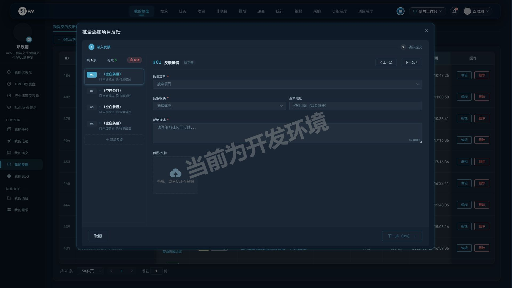
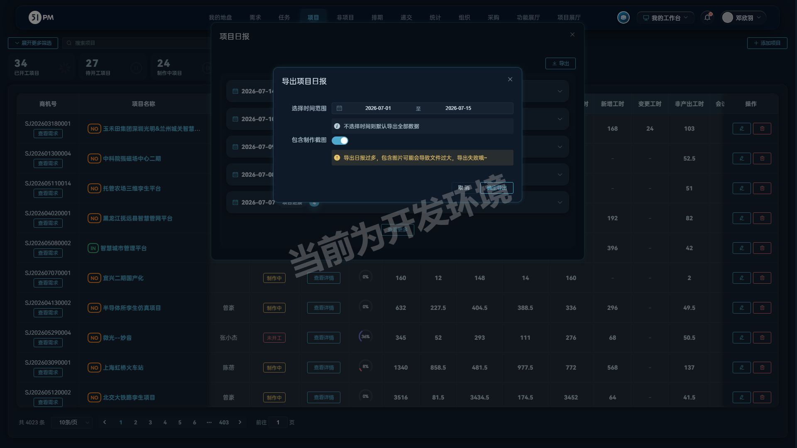
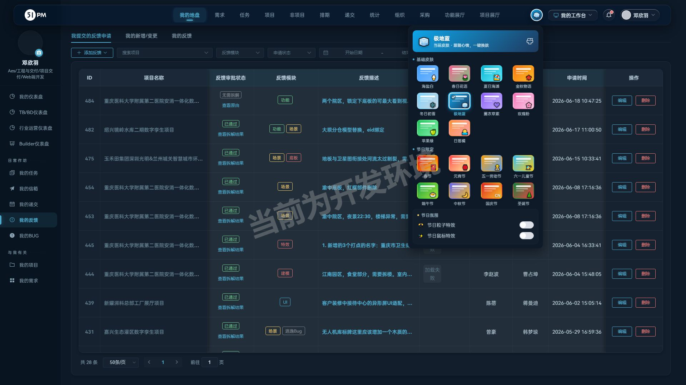
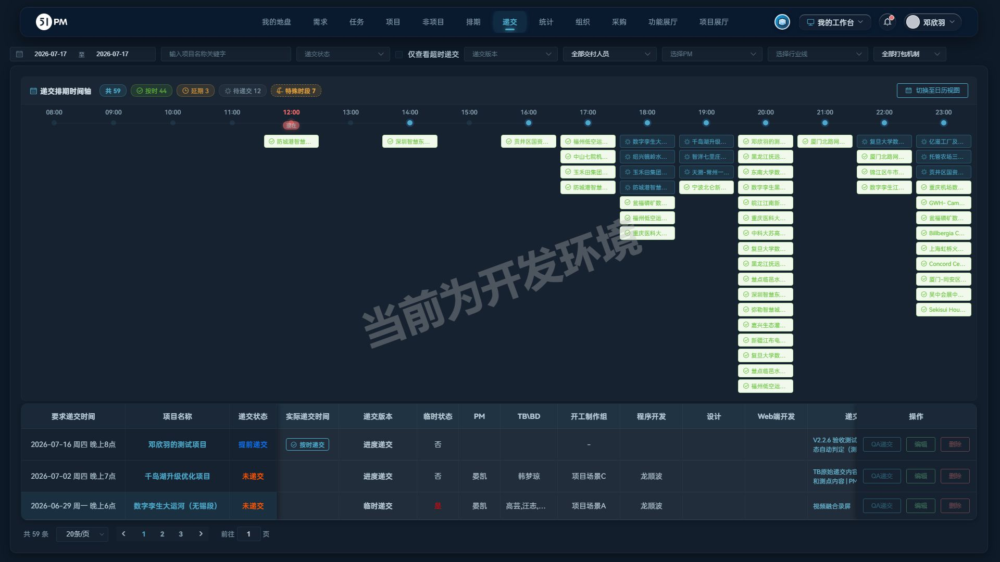

阅读顺序：先看「一、逐需求验收详情」判断本次交付达标与否 → 「二、缺陷」「三、风险」是待处理项 → 「四、发版初稿」→ 回归与接口等测试证据在附录，供追溯，不是验收结论本身。
帮我验收 V2.2.3。本周开发内容如下：
- 递交模块：通过递交列表点进项目详情页，再返回递交模块，递交列表被折叠；再次切换到其他模块再返回恢复正常
- 项目日报、统计：日报和花费的导出，时间跨度大了就导不出来，尤其是日报，对于比较复杂的项目一次最多导出半个月的数据。怀疑是日报里包含截图，新增传参选项是都需要包含截图
- 全局组件：项目、非项目、反馈申请的批量创建使用流程不统一，对于用户来说有体验问题，开发一个通用批量表单提交的组件，支持独立、批量、通用、垃圾回收等多功能表单容器，同时兼容不同业务类型
- 主题皮肤：修改各处UI颜色硬编码，地毯走查各个主题配色兼容性。
对应关系：需求 1 → §1，需求 2 → §2，需求 3 → §3（初判 🐛 经用户指正后复验撤销，详见该节），需求 4 → §4
export_estimate_list_by_project_id：正常 200
xlsx；空 project_id→code51；非法 id→空模板不 5xx；include_images=abc→按
falseproduce_demand/add_apply_demand：正常落库；空商机号/空模块→code51本轮无功能性 🐛（需求 3 的初判缺陷经复验撤销）；下列为验收中确认的技术缺陷。
| # | 缺陷 | 严重度 | 现场 / 证据 | 建议 |
|---|---|---|---|---|
| B1 | 非项目任务表 console 红错
Duplicate keys detected: 'pause'（notTaskTable.vue） |
轻微 | 打开非项目任务列表即触发 console error | 修复 v-for key 重复，pause 键去重 |
与缺陷的区别：这些不是已确认必修的 bug，而是需要产品/后端确认口径、或本轮验收没覆盖到的盲区。等级按「影响 × 可能性」评。
| # | 事项 | 等级 | 建议 |
|---|---|---|---|
| R1 | 无 PM 项目可提交反馈申请但无人可审、提交人也看不到（样本 #488/#489） | 中高 | 下拉过滤无 PM 项目或提交时拦截提示 |
| R2 | #487（有 PM，待审批）也不在我的列表，与「有 PM 即可见」不完全吻合 | 低 | 可见性口径可能叠加状态/角色，请产品确认 |
| R3 | 从项目详情返回递交列表后筛选日期重置回今天，易误认为列表被清空 | 中 | 确认"保留筛选状态"是否在本次修复范围 |
| R4 | 统计侧日报导出、花费/成本导出均无"包含截图"选项（开发提到"日报和花费"） | 中 | 确认花费侧是否也应加该选项 |
| R5 | 暗色主题（极地蓝/中秋）个别页面对比度属视觉判断，自动化只验了颜色跟随变量 | 低 | 人工视觉抽查 1~2 个暗色主题页面 |
| R6 | 日报导出对不存在的 project_id 返回空模板 xlsx（200）而非报错 | 低 | 可维持现状或改 code 51 提示 |
| R7 | 「工时数据总览」tab 自带声明"当前为前端 Mock 演示数据" | 中 | 确认该 Mock 页是否应随本版对外可见 |
未覆盖盲区：日报导出未验超大数据量极限档（测试库无等量数据）；批量组件未做单批 50+ 条压力录入；主题走查为 4 页 × 18 主题程序化扫描，未逐页遍历全站。
强度中等，统一项目、非项目与反馈申请的批量创建表单，日报导出支持自选是否包含制作截图，完善全站多主题配色，修复递交列表已知问题。
需关注人员：PM、工程与交付全员
1.「批量创建表单（项目/非项目/反馈申请通用）」：（降低批量录入成本，减少逐条创建的重复操作） 项目需求拆解、非项目创建任务（独立任务/多人通用任务）、批量添加项目反馈统一升级为同一套两步式批量表单， 支持左侧条目栏集中管理多条记录（新增、切换、一键全清），实时标记每条完善状态并显示有效条数， 支持"独立模式"逐条填写不同字段、"通用模式"一次填写批量生效（如多人任务一次编辑分配给多人）， 确认页仅提交有效条目，空白条目自动忽略，防止误提交；

需关注人员：PM、TB\BD、组长
1.「项目日报-导出」新增导出配置：支持选择时间范围（不选则导出全部），并可自选是否包含制作截图；不含截图时大时间跨度日报可一次性稳定导出，减少按半月分段导出的人工操作；

需关注人员：全员
2.「主题皮肤」全站配色兼容性走查：修正各处颜色硬编码，10 款基础皮肤与 8 款节日限定皮肤下按钮、表格、菜单等界面元素配色统一跟随主题，主题选择跨设备同步生效；

需关注人员：QA、PM
1.修复了「递交」从项目详情页返回递交列表时列表展示异常的问题，返回后筛选区、递交排期时间轴与列表完整展示；

全量回归 37 通过 / 4 跳过（@write 写链路默认跳过）/ 0 失败，用时 3.4 分钟。全部「已知BUG跟踪」哨兵用例维持预期失败（BUG 仍在），无 unexpected pass，老功能未被本次发版改坏。
本轮接口用例（含完整参数）已固化至
regression/tests/api-v2.2.3.spec.js（纯接口回归，不开浏览器，秒级）。各功能的接口验证明细见
§一 各节「验证证据-接口」。
| 数据 | 位置 | 说明 |
|---|---|---|
| 反馈申请 #488/#489（V2.2.3验收/复验-批量表单…（测试数据）） | CBD物业管理系统 (SJ202601230001)，待PM审批 | 无 PM 项目边界样本（对应 R1），无人可审、提交人列表不可见 |
| 反馈申请 #490（V2.2.3复验-批量表单提交流程重走-新耀（测试数据）） | 新耀湃科总部工厂展厅项目 (SJ202405130008)，PM=陈蓓 | 复验样本；提交当日已被 PM 审批「已通过」，进入正常流转（可见性回归用例样本消耗后自动 skip，重提一条即可恢复） |
| 账号主题偏好 | 验收中遍历 18 主题，已恢复为「圣诞节」 | 无残留 |